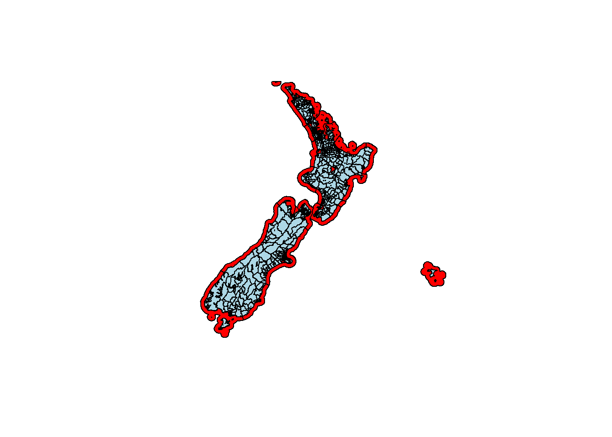
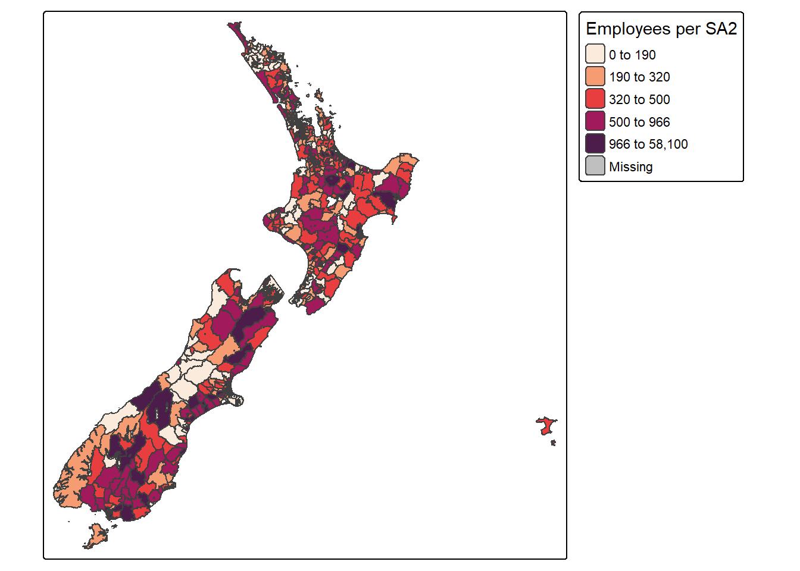

library(sf)
library(tidyverse)
library(tmap)
library(leaflet)
library(viridis)
library(patchwork)
library(gt)Balanced Spatial Regionalisation
This notebook does stuff that I should fully describe later.
# Load business data. Choose the correct path depending on whether the code is
# being run interactively or from the notebook.
if (interactive()) {
be_sf <- st_read("data/new-zealand-business-demography-statistics-at-february-2020-.shp")
} else {
be_sf <- st_read("../data/new-zealand-business-demography-statistics-at-february-2020-.shp")
}Reading layer `new-zealand-business-demography-statistics-at-february-2020-' from data source `C:\Users\simpk\OneDrive\Professional\Projects\balanced_spatial_regionisation\data\new-zealand-business-demography-statistics-at-february-2020-.shp'
using driver `ESRI Shapefile'
Simple feature collection with 2239 features and 48 fields
Geometry type: MULTIPOLYGON
Dimension: XY
Bounding box: xmin: 1067061 ymin: 4701977 xmax: 2523320 ymax: 6220199
Projected CRS: NZGD2000 / New Zealand Transverse Mercator 2000# Display the first few rows of the data as a gt table
be_sf_head <- head(be_sf, 5) %>%
st_drop_geometry() %>%
gt() %>%
tab_header(title = "First five rows of the business and employment data")
be_sf_head| First five rows of the business and employment data | |||||||||||||||||||||||||||||||||||||||||||||||
|---|---|---|---|---|---|---|---|---|---|---|---|---|---|---|---|---|---|---|---|---|---|---|---|---|---|---|---|---|---|---|---|---|---|---|---|---|---|---|---|---|---|---|---|---|---|---|---|
| SA22020_V1 | SA22020__1 | SA22020__2 | LAND_AREA_ | AREA_SQ_KM | SHAPE_STAr | SHAPE_STLe | A_geograph | A_employee | B_geograph | B_employee | C_geograph | C_employee | D_geograph | D_employee | E_geograph | E_employee | F_geograph | F_employee | G_geograph | G_employee | H_geograph | H_employee | I_geograph | I_employee | J_geograph | J_employee | K_geograph | K_employee | L_geograph | L_employee | M_geograph | M_employee | N_geograph | N_employee | O_geograph | O_employee | P_geograph | P_employee | Q_geograph | Q_employee | R_geograph | R_employee | S_geograph | S_employee | Total_geog | Total_empl | SHAPE_Leng |
| 100100 | North Cape | North Cape | 829.0817 | 829.0817 | 829080140 | 415962.3 | 84 | 250 | NA | NA | 3 | 6 | NA | NA | 12 | 3 | 0 | 0 | 6 | 65 | 9 | 35 | 3 | 15 | NA | NA | 3 | 0 | 33 | 9 | 6 | 0 | 6 | 50 | 3 | 3 | 6 | 50 | 9 | 45 | 3 | 9 | 6 | 12 | 198 | 550 | 415962.3 |
| 100200 | Rangaunu Harbour | Rangaunu Harbour | 273.9365 | 273.9365 | 274007486 | 149155.4 | 132 | 240 | NA | NA | 9 | 50 | 3 | 0 | 36 | 35 | 6 | 6 | 15 | 65 | 6 | 6 | 6 | 35 | NA | NA | NA | NA | 30 | 25 | 15 | 6 | 6 | 45 | 3 | 0 | 9 | 45 | 6 | 18 | 6 | 0 | 9 | 15 | 291 | 590 | 149155.4 |
| 101900 | Kaeo | Kaeo | 255.5597 | 255.5597 | 255560407 | 100821.3 | 42 | 15 | NA | NA | 6 | 0 | NA | NA | 18 | 3 | 3 | 3 | 0 | 15 | 3 | 6 | 3 | 15 | 0 | 0 | 3 | 0 | 9 | 0 | 6 | 0 | NA | NA | 3 | 3 | 6 | 45 | 3 | 75 | 3 | 0 | 6 | 9 | 117 | 190 | 100821.3 |
| 102000 | Omahuta Forest-Horeke | Omahuta Forest-Horeke | 463.5517 | 463.5517 | 463550013 | 213722.7 | 81 | 35 | NA | NA | NA | NA | NA | NA | 6 | 0 | NA | NA | 0 | 0 | 0 | 12 | 0 | 0 | 0 | 9 | 0 | 0 | 24 | 0 | 3 | 0 | 3 | 0 | NA | NA | 6 | 25 | NA | NA | 3 | 3 | 3 | 0 | 135 | 85 | 213722.7 |
| 102100 | Hokianga South | Hokianga South | 126.0472 | 126.0472 | 126045921 | 145583.9 | 42 | 9 | NA | NA | 6 | 3 | NA | NA | 9 | 0 | 0 | 0 | 3 | 15 | 12 | 18 | 3 | 12 | 0 | 0 | 3 | 0 | 12 | 0 | 9 | 0 | 3 | 6 | 6 | 3 | 6 | 55 | 0 | 180 | 0 | 3 | 0 | 0 | 120 | 300 | 145583.9 |
rm(be_sf_head)
# Select only relevant columns
be_sf <- be_sf %>%
select(SA22020_V1, SA22020__1, Total_geog, Total_empl, LAND_AREA_) %>%
rename(sa2_code = SA22020_V1,
sa2_name = SA22020__1,
total_businesses = Total_geog,
total_employees = Total_empl,
land_area = LAND_AREA_)Check for missing data.
is.na(be_sf) %>% colSums() # 81 polygons with missing business or employment data sa2_code sa2_name total_businesses total_employees
0 0 81 81
land_area geometry
0 0 # Make a simple plot with the missing data polygons highlighted
plot(st_geometry(be_sf), col = "lightblue")
plot(st_geometry(be_sf[is.na(be_sf$total_businesses) | is.na(be_sf$total_employees), ]), add = TRUE, col = "red")
The missing data are all the offshore areas (i.e. the coastline polygons and Lake Taupo). We will remove these polygons from the analysis. We will also remove the Chatham islands just to make visualisations a little more compact.
be_sf <- be_sf %>%
filter(!is.na(total_businesses) & !is.na(total_employees))
# Remove Chatham Islands (SA2 code 700200)
be_sf <- be_sf %>%
filter(sa2_code != "700200")Basic EDA stats to understand the data
be_sf %>%
st_drop_geometry() %>%
summarise(across(c(total_businesses, total_employees, land_area),
list(mean = mean,
median = median,
sd = sd,
cv = ~sd(.x) / mean(.x),
min = min,
max = max),
.names = "{.col}_{.fn}")) %>%
pivot_longer(
cols = everything(),
names_to = c("Variable", ".value"),
names_pattern = "(.*)_(.*)"
) %>%
mutate(Variable = recode(Variable,
"total_businesses" = "Businesses",
"total_employees" = "Employees",
"land_area" = "Land area")) %>%
gt() %>%
fmt_number(columns = where(is.numeric), decimals = 0) %>%
cols_label(
Variable = "Variable",
mean = "Mean",
median = "Median",
sd = "Std. Dev.",
cv = "Coef. of Var.",
min = "Minimum",
max = "Maximum"
) %>%
tab_header(title = "NZ business and employment data summary statistics")| NZ business and employment data summary statistics | ||||||
|---|---|---|---|---|---|---|
| Variable | Mean | Median | Std. Dev. | Coef. of Var. | Minimum | Maximum |
| Businesses | 275 | 213 | 290 | 1 | 0 | 4,191 |
| Employees | 1,073 | 400 | 2,696 | 3 | 0 | 58,100 |
| Land area | 122 | 2 | 487 | 4 | 0 | 12,042 |
tm_shape(be_sf) +
tm_polygons("total_employees",
style = "quantile",
palette = viridis::rocket(200,
direction = -1,
begin = 0.2, end = 1),
title = "Employees per SA2")
Inital statistics of how well balanced each SA2 area is in terms of business and employment, may be used later to assess how well balanced the final regions are.
sa2_base_stats <- data.frame(
Metric = c("Number of polygons",
"Mean employees per polygon",
"Median employees per polygon",
"CV employees",
"Mean businesses per polygon",
"Median businesses per polygon",
"CV businesses"),
Value = c(nrow(be_sf),
round(mean(be_sf$total_employees), 0),
round(median(be_sf$total_employees), 0),
round(sd(be_sf$total_employees) / mean(be_sf$total_employees), 3),
round(mean(be_sf$total_businesses), 0),
round(median(be_sf$total_businesses), 0),
round(sd(be_sf$total_businesses) / mean(be_sf$total_businesses), 3))
)
sa2_base_stats %>%
gt() %>%
cols_label(
Metric = "Metric",
Value = "Value"
) %>%
tab_header(title = "Initial SA2 balance")| Initial SA2 balance | |
|---|---|
| Metric | Value |
| Number of polygons | 2158.000 |
| Mean employees per polygon | 1073.000 |
| Median employees per polygon | 400.000 |
| CV employees | 2.512 |
| Mean businesses per polygon | 275.000 |
| Median businesses per polygon | 213.000 |
| CV businesses | 1.057 |